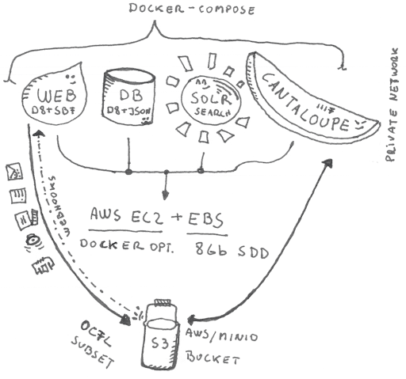

Archipelago Software Services

At the core of the Archipelago philosophy is our commitment to both simplicity and flexibility.
Under the hood, Archipelago's architecture is:
Installation is entirely Dockerized and scripted with easy-to-follow directions.
- Docker containers are as follows:
| Container | Purpose | Description |
|---|---|---|
| esmero-web | NGNIX | Routes calls to esmero-php |
| esmero-php | PHP-FPM | Has all binaries for postprocessing/exif/ocr/etc. Runs PHP code. |
| esmero-db | Database | AMD and INTEL processors: MYSQL 8 ARM processors: MariaDB |
| esmero-minio | Storage | S3 API compatible Backend file and ADO as file storage. In a local it will do all the S3 stuff, on a live instance it can server as file routing to AWS S3, Azure Blob Storage, etc. |
| esmero-solr | Solr | Currently version 8.8.2 |
| esmero-nlp | Natural Language Processing | NLP64 server for entity extraction, language detection, etc. |
Information related to non-Dockerized installation and configruation can be found here: Traditional Installation Notes
Strawberryfield Modules at the heart of every Archipelago:
- Strawberryfield
- Format Strawberryfield
- Webform Strawberryfield
- Strawberry Runners
- Archipelago Multi-Importer (AMI)
Documentation related to the Strawberryfield modules can be found here: Strawberryfields Forever
Archipelago also extends these powerful tools:
- Annotorius
- Drupal Webform Module
- International Image Interoperability Framework (IIIF)
- Internet Archive BookReader
- Mirador
- Pannellum
- Replayweb.page Webarchive Player
- Solr OCR Highlighting
- Twig Templating In Symfony / In Drupal
Thank you for reading! Please contact us on our Archipelago Commons Google Group with any questions or feedback.
Return to the Archipelago Documentation main page.